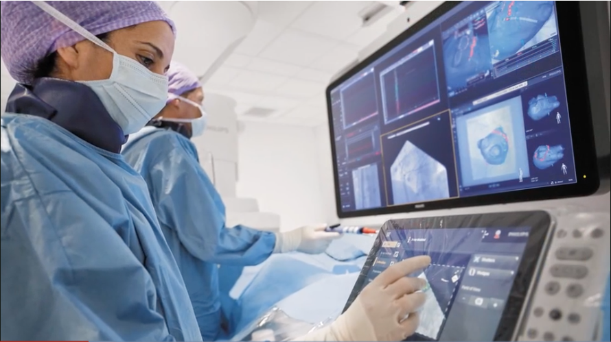
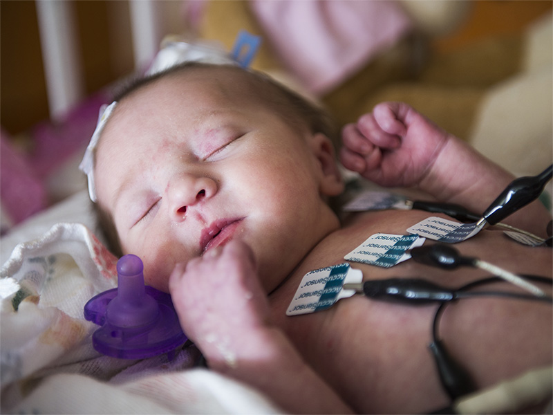
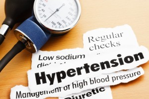
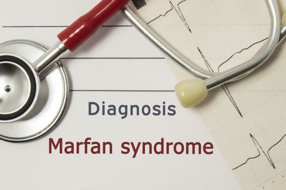
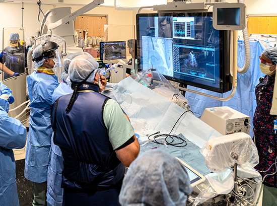
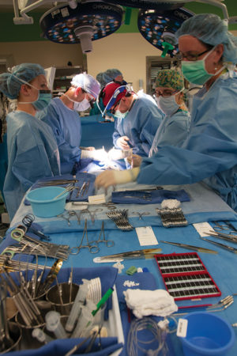
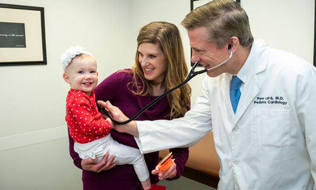

Our main ambition is protect your heart for future |
Proper cardiovascular function is essential for a healthy life, so the best heart and vascular care is vital. Whether you or a loved one has an arrhythmia, heart disease, a heart attack, or vascular disease, you can count on us to provide the finest interventional cardiology services.
We are an award-winning cardiac care hospital network serving the tristate area. We put a lot of "heart" into the way we deliver cardiovascular care. First, we deploy the latest advancements so each patient has access to innovative treatments. We have one of the three largest heart transplat programs in the nation and the largest pediatric cardiology and cardiac surgery programs in the colombo area. Plus, we perform more Transcatheter Aortic Valve Replacements(TAVR) than any other health system in colombo area.
Successful early intervention has created a growing population of patients reaching adulthood with complex structural congenital heart disease. As specialists in congenital heart disease, pediatric cardiologists have the expertise to coordinate a multidisciplinary approach in providing high quality patient care to adults with congenital heart disease. This multidisciplinary approach includes the close involvement of the pediatric cardiologist with primary care physicians, adult cardiology, high-risk obstetrics, social work, interventional cardiology and the congenital cardiovascular surgeons. Specific issues arising in adults with congenital heart disease include heart failure, pulmonary hypertension, pregnancy, residual congenital defects, coronary artery disease and complex heart rhythm disorders. Our ability to maintain normal quality and length of life is continually improving. Our goal is to offer state of the art care throughout the lives of these patients. |
The electrophysiology (EP) clinic is similar to General Cardiology clinic except focusing on children and adolescents with heart rhythm problems such as abnormally fast, irregular, or slow heartbeats. Some patients will be seen in EP clinic from the beginning, while others start in general cardiology clinic and then are referred to EP clinic when their symptoms turn out to be related to a heart rhythm problem. Common conditions treated include Coronary artery and cacular disease, supraventricular tachycardia (SVT), and heart block. Important but rare conditions treated include life-threatening rhythm problems such as Ventricular Fibrillation (VF), Sudden Cardiac Death (SCD), Long QT Syndrome (LQTS), Brugada syndrome, Arrhythmogenic Right Ventricular Dysplasia/Cardiomyopathy (ARVD/ARVC), and Catecholaminergic Polymorphic Ventricular Tachycardia (CPVT). For patients with a family history of one of these conditions, please try to bring any records (genetic testing, autopsy results) to the first visit. |
 |
Every day of the week pediatric cardiologists evaluate patients in the general cardiology clinic. These visits provide comprehensive evaluations and management of children and adolescents with heart related conditions including congenital heart disease, cardiomyopathy, congestive heart failure, acquired heart diseases or new referrals for common cardiac symptoms such as chest pain, palpitations or syncope. The pediatric cardiologist is responsible for your child's care but other members of the cardiac team including cardiology fellows and nurse practitioners may also participate in the visit. |
 |
Coronary heart disease is the leading cause of adult morbidity and mortality, resulting in 50% of all deaths in the United States. Cardiovascular risk factors for the development of early heart disease are increasing in childhood including high blood pressure and high cholesterol. Our interdisciplinary clinic offers complete diagnostic, counseling, and treatment options for patients with suspected dyslipidemias (high cholesterol) and hypertension
|  |
Marfan syndrome is a connective tissue disorder. Connective tissue provides support to tendons, ligaments, blood vessel walls, cartilage and heart valves. Marfan syndrome is an inherited condition resulting in an abnormal chemical makeup of connective tissue. Patients may develop dilatation (enlargement) of the aorta or have heart valve disease. The diagnosis of Marfan syndrome is based upon unique physical findings, heart related conditions and/or genetic testing.
|
 |
Cardiac catheterization is a minimally invasive test that provides additional information regarding your congenital heart defect. A congenital heart defect is an abnormality of the heart present since birth. Because of the abnormality, the structure and function of the heart is affected. |
 |
At the Children's Heart Center of New Life Hospital, pregnant mothers at risk of bearing a child with congenital heart disease are evaluated by a pediatric cardiologist with extensive experience in the diagnosis and management of fetal heart disease. An onsite Pediatric Echocardiography Lab enables the unborn child to benefit from the most advanced technology currently available. Other problems, such as abnormal heart rhythms or heart failure, may be evaluated and treated. Once identified the mother and fetus are treated as a single patient and may be followed for the rest of the pregnancy by the Fetal Cardiology Team if needed. The team includes the pediatric cardiologist, advanced practice nurse and social worker. The pregnancy is discussed in detail with perinatology, neonatology and, if necessary, pediatric cardiothoracic surgery. Delivery is planned in conjunction with these groups.
|
If your child has a heart problem, our specialists review all of the available options to determine the best treatment for your child's heart problem before surgery is considered. Many children are candidates for minimally invasive surgery—an approach that requires only small incisions, and allows for a faster return to normal activities. In other cases, traditional open-heart surgery is the best option for successful treatment. |
 |
The Pediatric Electrophysiology (EP) Program provides care for children and adolescents with all varieties of heart rhythm problems. Usually this includes a visit to the EP clinic and sometimes leads to invasive procedures such as an EP study or Catheter ablation. |
Diagnosis and treatment of a heart condition is a stressful event in the life of any family. At New Life Hospital, dedicated and experienced pediatric cardiac social workers are available around the clock to provide support for the patients undergoing treatment and their families. Our social worker is a vital part of each child's cardiology care team, anticipating and responding to the unique needs of each family. Your child's social worker will be available for support on an outpatient and an inpatient basis, to help meet emotional needs and to help you access appropriate community health resources. |
 |
Palliative care is relief of physical, emotional, social and spiritual suffering in children and their families through the ups and downs of a child’s illness. The word “palliative” means “comfort” and that is what palliative care is all about.
|
| Services | Doctors | New Life Hospital, No.26, Galle Road , Colombo 6 |
| Facilities | Health Packages | newlifehospital@gmail.com |
| Rooms | Patient Registration | 011 2635981 |
| Food & Beverages. | Channel your doctor | 011 2635982 |
©All Right Reserved | New Life Hospital